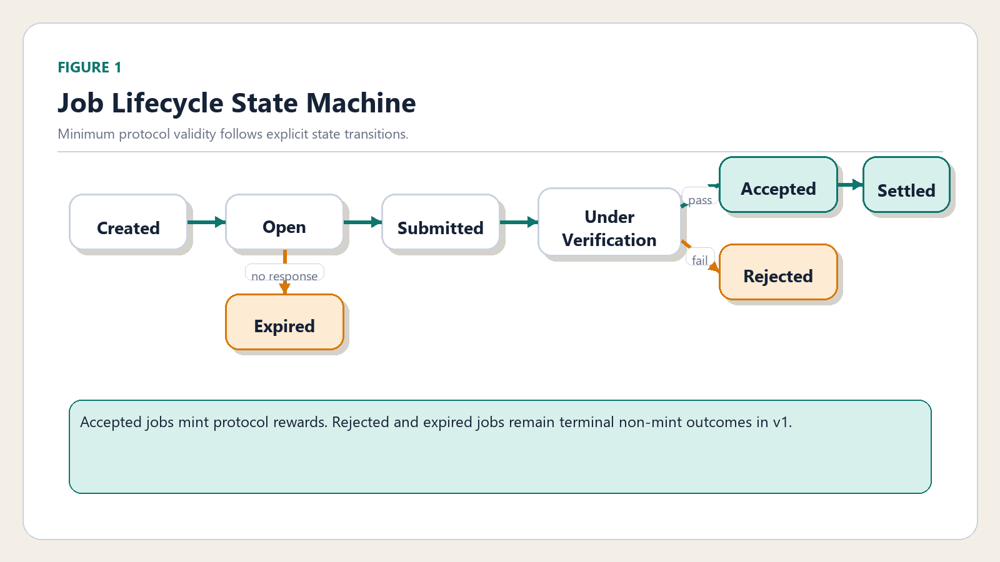
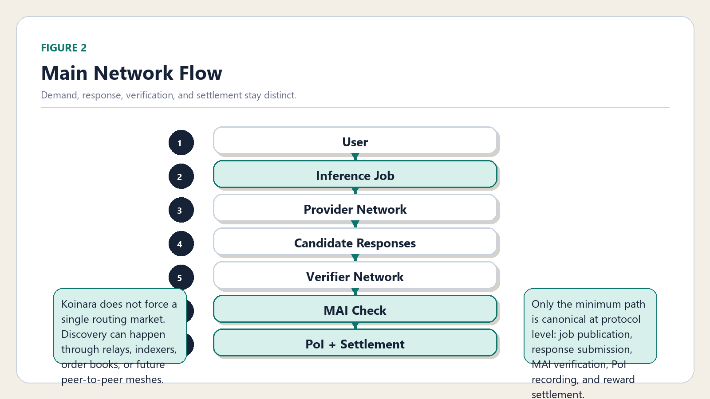
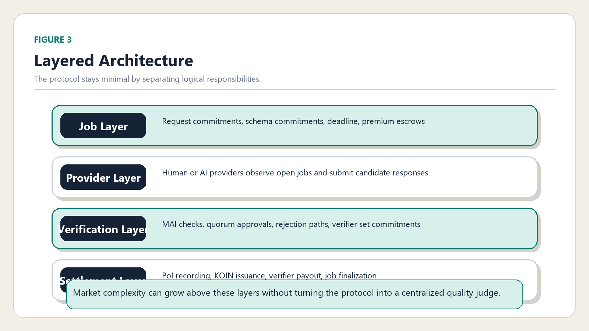
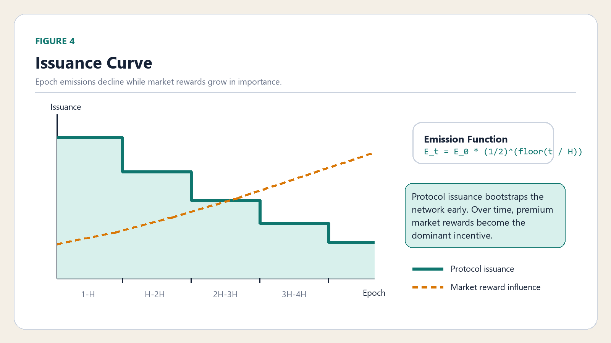

Minimum Acceptable Inference
MAI is not a best-answer oracle. It is the minimum line of protocol acceptance, defined in v1 by valid job state, deadline compliance, non-empty response, format pass, and verifier approval.
MINIMUM PROTOCOL / OPEN INFERENCE MARKET
Koinara defines only two protocol primitives:
Minimum Acceptable Inference (MAI) and
Minimum Reward. Everything above that floor, from quality
and speed to depth and user preference, belongs to the market.
PROTOCOL FLOOR
MAI is not a best-answer oracle. It is the minimum line of protocol acceptance, defined in v1 by valid job state, deadline compliance, non-empty response, format pass, and verifier approval.
KOIN issuance rewards accepted inference at the protocol floor. Premium rewards stay market-funded and must remain separate from protocol issuance.
PoI proves that a submission satisfied the minimum protocol conditions. It does not prove universal truth or market-best quality.
WHITEPAPER PACKAGE
The protocol thesis, figures, MAI, PoI, incentives, and minimal architecture.
Download PDFThe Korean main paper mirrors the current English release.
Download PDFDeployment profiles, contract mapping, portability notes, and parameter references.
Download PDFThe appendix package is published separately so the main paper can stay concise.
Download PDFPUBLIC NODE
`Koinara-node` is the standalone public background node for the network. It connects directly to deployed Koinara contracts across supported networks, with no hosted API, no business layer, and no UI dependency. The current runtime can fail over across healthy EVM deployments while keeping Solana in prepared-only scope.
git clone https://github.com/sinmb79/Koinara-node.git
cd Koinara-node
npm install
npm run setup
npm run doctor
npm run node# Start OpenClaw
ollama launch openclaw --model qwen3.5
# Run Koinara-node separately
npm run node
The command above starts OpenClaw only. There is no single built-in command yet
that attaches OpenClaw to Koinara-node. Today the agent and the node
run as separate processes.
SUPPORTED NETWORKS
Primary reference deployment path for v1 and the first chain in the rollout plan.
Ready in the node runtime as an independent EVM deployment target with health-based participation switching.
Supported by the same EVM runtime path so protocol instances can expand without changing node behavior.
Prepared through the shared EVM adapter so the same provider and verifier loop can run there after deployment.
Configuration and adapter boundaries are in place, but the runnable Solana deployment and runtime remain future work.
RENDERED FIGURES




NEXT TRACK
Worldland remains the first reference deployment path for the v1 contracts, with chain-specific runbooks and deployment artifacts kept outside the protocol repo.
After the Worldland path is stable, Base, Ethereum, and BNB can each host independent Koinara deployments without changing the minimal protocol surface.
Koinara-WorldlandSolana and future non-EVM tracks should land behind explicit chain adapters, not by stretching the current Solidity deployment model beyond its boundary.